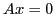

In this talk we discuss the perfomance of new least squares based algebraic multigrid method which is modification of Brandt's Bootstrap AMG(BAMG). Solving the linear system using least squares based AMG requires set of vectors that are results of several fine level relaxation sweeps on homogeneous equation . Unlike Brandt's BAMG, new method approximate all F-F connections in least squares sense. The presented numerical experiments demonstrate that the method can achieve good convergence with less vectors and relaxation sweeps.